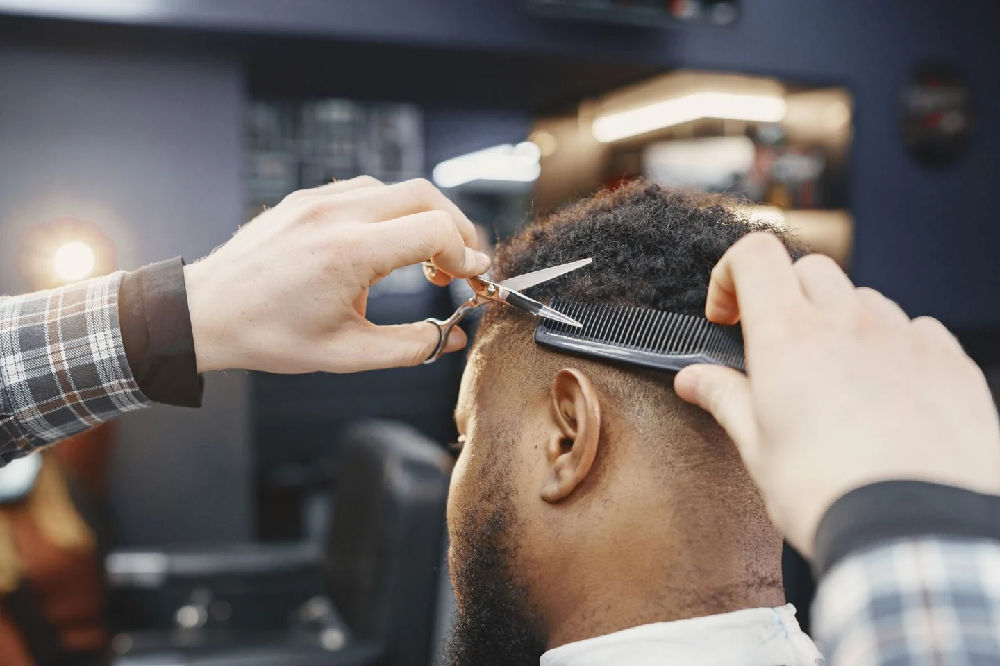
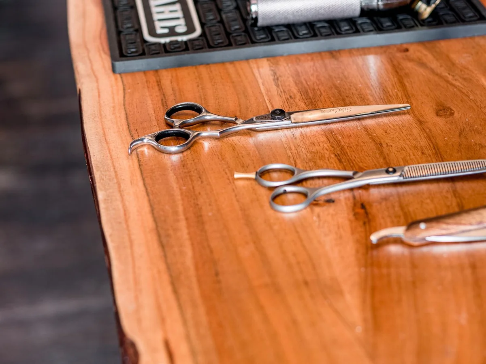

Мужская стрижка
Консультация, стрижка и укладка.
Барбершоп · Демо Reach & Form
Стрижки и оформление бороды. Выберите услугу по цене и времени, затем подберите удобный визит.

Консультация, стрижка и укладка.
Форма бороды и оформление контура.
Две услуги за один визит.

Сначала обсуждаем форму и привычки в укладке. Затем мастер подбирает длину, оформляет контур и показывает, как уложить волосы дома.
У каждой услуги своя специализация. Выбор подставит мастера и услугу в демо-форму.
Ножницы и классическая форма
Для тех, кто хочет сохранить длину и обновить силуэт.
Контур и форма бороды
Подберёт линию щёк и шеи с учётом роста волос.
Стрижка и борода
Соберёт обе услуги в один визит.
Помощник Reach & Form
Сравнит варианты по цене и длительности и откроет запись с выбранной услугой.
Интерактивное демо с готовыми ответами.Выберите один из вопросов.
Да. Оформление бороды и контура занимает 30 минут в этом примере.
Достаточно объяснить, сколько длины хочется оставить и сколько времени вы готовы тратить на укладку.
В прайсе рядом с каждой услугой. При выборе мастера форма сразу подставит связанную с ним услугу.
Если форма ещё не выбрана, мастер поможет подобрать её в начале визита.
Навигация в демо
На карте показан городской ориентир для проверки маршрута. По этому адресу нет точки обслуживания Reach & Form.
Ориентир — главный вход в Чистяковскую рощу со стороны Колхозной.
Открыть на карте ↗